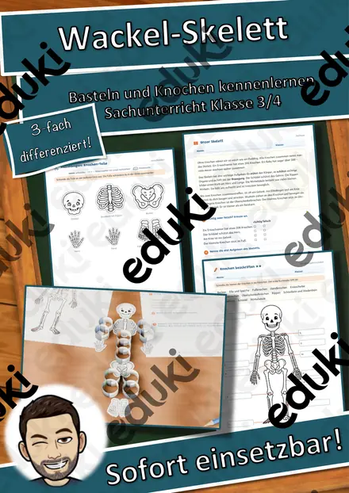

3D-Zauberbild Lebensraum Wald – Umkehrperspektive basteln, Sachtext und Forscherauftrag, 3-fach differenziert (Klasse 3/4)
Ein Bild, das sich bewegt: Bei diesem 3D-Zauberbild zum Thema „Lebensraum Wald“ ragt ein bemalter Papier-Pyramidenstumpf aus der Wand. Das vorderste Feld zeigt, was im Bild am weitesten weg ist – diese Umkehrperspektive täuscht das Gehirn. Wer mit einem Auge zu vorbeigeht, sieht die Szene sich mitdrehen. Die Kinder bauen ihr Zauberbild selbst, lesen einen Sachtext und erforschen die optische Täuschung.4 Szenen zur Auswahl, jede farbig, zum Ausmalen und als ganz einfache Ausmalvorlage mit dicken Linien, dazu eine leere Vorlage für eigene Zauberbilder.
Dreifach differenziert (★/★★/★★★): Fragen zum Sachtext in drei Stufen, einfacher, detaillierter oder leerer Bogen, Forscherauftrag mit Vermutung und Erklärung.
Enthalten (21 Seiten):
- Hinweise für Lehrkräfte mit Ablauf (ca. 100 Minuten), Differenzierung, Kopierplan und Lehrplanbezug
- Überblick mit Musterfotos aus drei Blickwinkeln
- Bauanleitung in 6 Bildschritten mit Ich-kann-Leiste
- 4 Zauberbilder („Waldweg am Tag“, „Nachts im Wald“, „Herbst im Wald“ und „Winter im Wald“), je farbig, zum Ausmalen und einfach
- leere Vorlage mit Hilfslinien für ein eigenes Zauberbild
- Sachtext „Der Wald – ein Haus mit Stockwerken“ mit wichtigen Wörtern
- 6 Fragen in drei Stufen
- Forscherauftrag „Warum dreht sich das Bild?“
- Suchauftrag und Galerie-Kärtchen für die Ausstellung
- Lösungen
Die Szenen und Anleitungsbilder habe ich mit KI-Unterstützung erstellt und einzeln geprüft, Netz und Symbole sind eigene Vektorgrafiken, die Musterfotos sind eigene 3D-Renderings der Bögen. Viel Freude beim Bauen und Staunen wünscht Snice
Ähnliche Materialien

Halloween Wackel-Skelett – Bastelvorlage, Sachtext Skelett und Knochen beschriften, 3-fach differenziert (Klasse 3/4)

Materialpaket Winter-Lesespaziergänge für Klasse 2–4: 5 Lesespaziergänge mit Rätseln, 3-fach differenziert (Winterwald, Spuren im Schnee, Plätzchen & mehr)

Materialpaket Winter und Advent für die 4. Klasse: 5 Lesespurgeschichten mit Rätselaufgaben (Weihnachtsmarkt, Fröbelsterne, Sternbilder & mehr)

Materialpaket Schnee, Eis und Wintersport für die 3. Klasse: 10 Lesespurgeschichten mit Rätselaufgaben (Rodelbahn, Eisstock, Schneelabor & mehr)

Materialpaket Natur im Winter für die 3. Klasse: 10 Lesespurgeschichten mit Rätselaufgaben (Wintertiere, Winterwald, Schneespuren & mehr)

Persönlichkeiten-Kartei Astronomie und Raumfahrt – Lesekartei mit 22 Persönlichkeiten, 3-fach differenziert (Klasse 3–6)

Lesespaziergang: Frühblüher im Garten und im Wald – 3-fach differenziert (★/★★/★★★), Klasse 2–4